|
一组2011年拍摄的手机图片
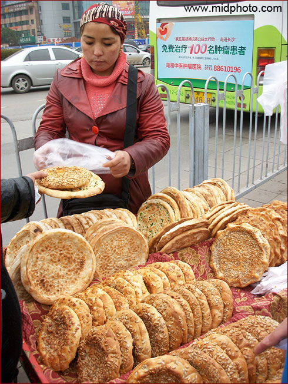
2011年1月，我680元人民币淘宝购买了华晶Altek806手机。目前这可能是世界上最强大的拍照手机，1200万像素，3倍光学变焦（相当于35-105mm镜头）。光线条件好的时候这个手机的图像质量是惊人的。这张火车站卖馕的图片没有任何后期处理，只缩小了尺寸。这个手机可以算是小数码相机附加了通讯模块。手机的功能很简单，只能打电话发短信。
此机的缺点是偶有对焦不实的情况，尤其是在长焦端，不知是不是个体原因。另外，这个手机的镜头在拍照的时候会伸出来，对街头纪实来说，还是不够隐蔽。如果是那种潜望式镜头就好了，像SONY的超薄卡片机那样的。
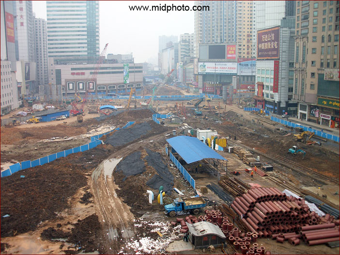
这是2011年3月24日的五一广场，长沙最繁华的地带变成了一个巨大的建筑工地。地铁一号线和二号线正在加紧施工。两年后，有地铁的长沙就会真的像一个大城市了。
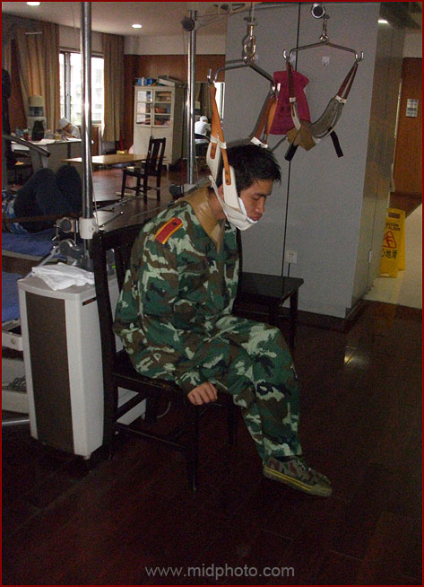
我是长沙市第四医院的常客，因为我父母每年都要在这住院检查治疗N次。我的手机里面积累了不少医院图片。这是一个正在做牵引治疗的学生。闪光灯拍摄。
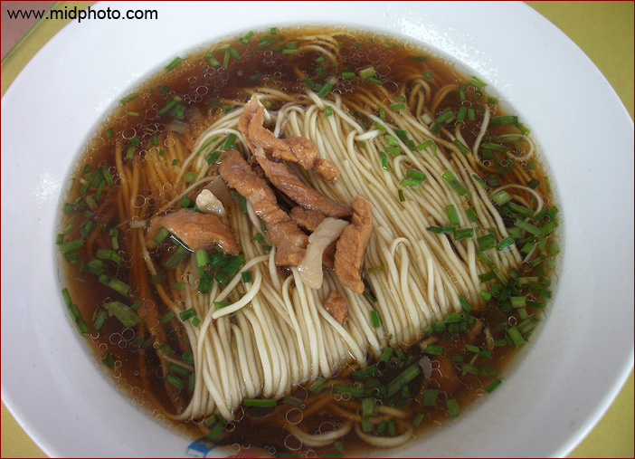
杨裕兴面馆，五块钱一碗的肉丝面是我的最爱
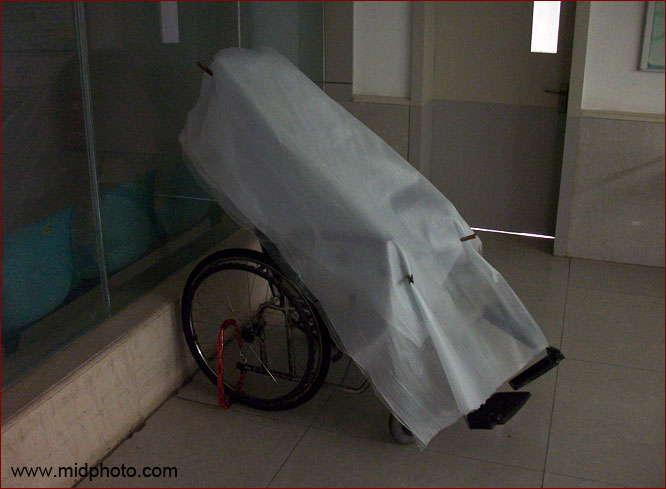
医院一角
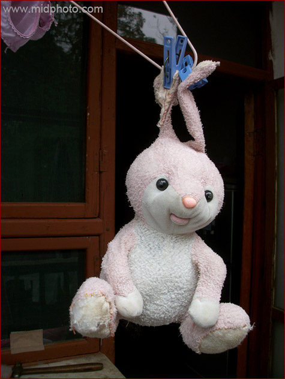
很多小孩子都有恋物癖，SNOOPY花生里面那个孩子就老拖着一条破毯子。对我四岁的小外甥女来说，这个破破的兔子就是她的半个生命，是万万不可缺少的。
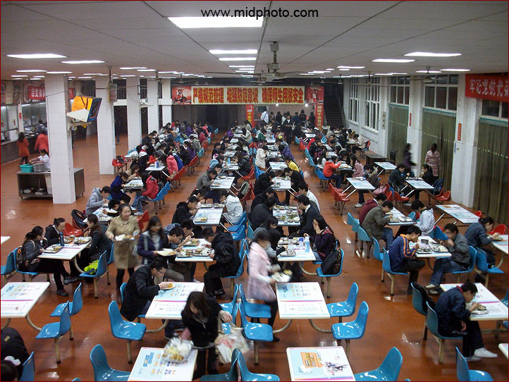
湖南大学北校区食堂。老实说这里的食物味道很一般。孩子们受苦了。
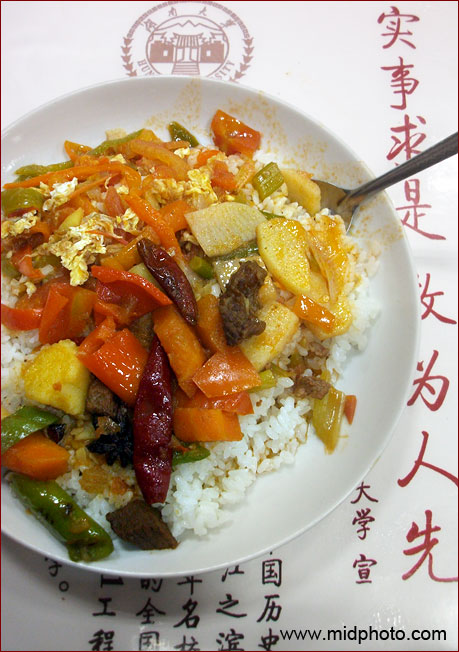
但北校区清真食堂的饭还不错，5块钱一盘，还有点牛肉，是穆斯林厨师做的。
饭桌上有广告和校训。实事求是，敢为人先，这种校训放哪都合适，等于没有。
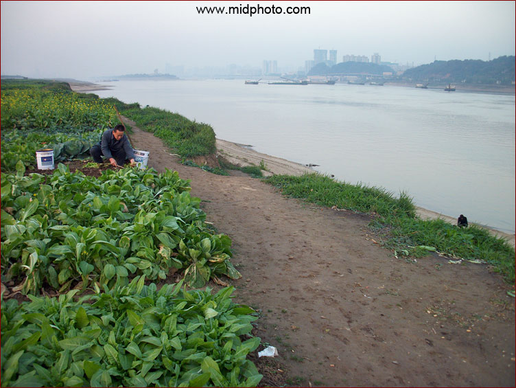
每年9月到次年的4月是湘江的枯水季节，很多人在河滩上种菜，等我退休了也加入他们。自从2003年三峡大坝开始蓄水以来，湘江的水位屡创新低，给长沙市的三百万居民，特别是我，造成了严重的阴影。我觉得水代表着一个城市的灵性。这条江是长沙市唯一的水源。如果这种缺水趋势再继续下去十几年，长沙市的你我就可以各自散伙逃命去了。
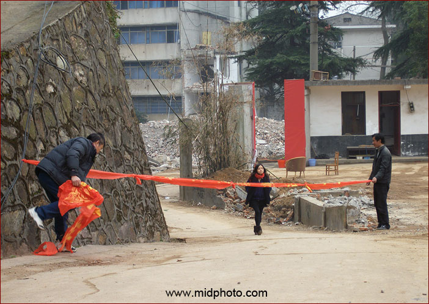
偶遇
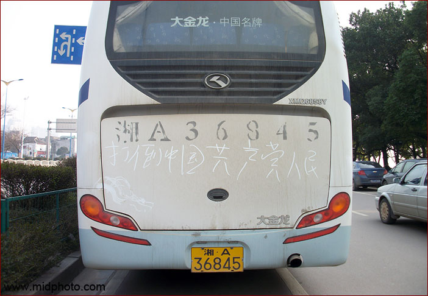
湘江路有人书写打到中国共产党？我眼花了？
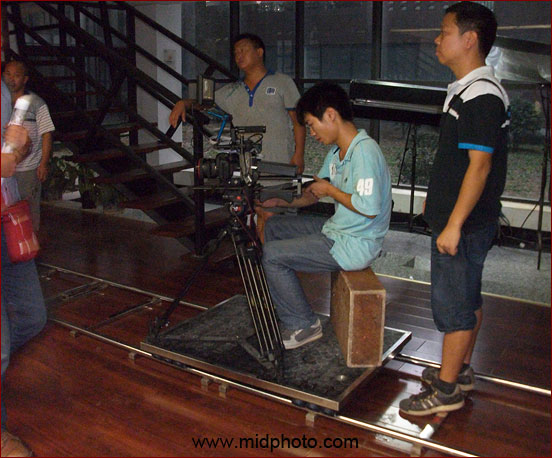
湖南大学商学院100周年院庆，请来了湖南电视台的专业摄制组拍宣传片，还带来了轨道
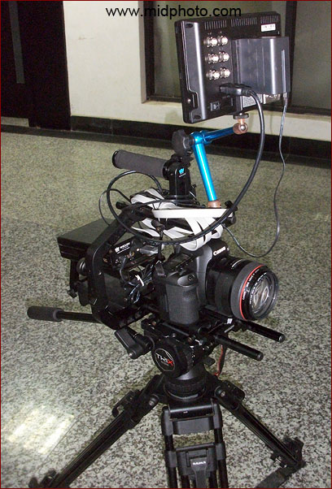
但轨道上架着的不是摄像机。而是Canon佳能5DII，照相机当做摄像机用。电池是外接的，通过相机的HDMI接着摄像监视器。以前只是传说5DII以及松下的GH2已经被不少广告公司乃至独立制片人拿来拍广告乃至小电影，这回眼见为实了。我也购买了GH2，主要就是想当摄像机用。照相机和摄像机逐渐走向统一，这是个趋势。
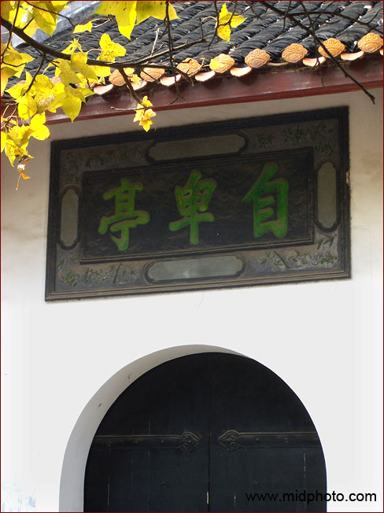
湖南大学自卑亭
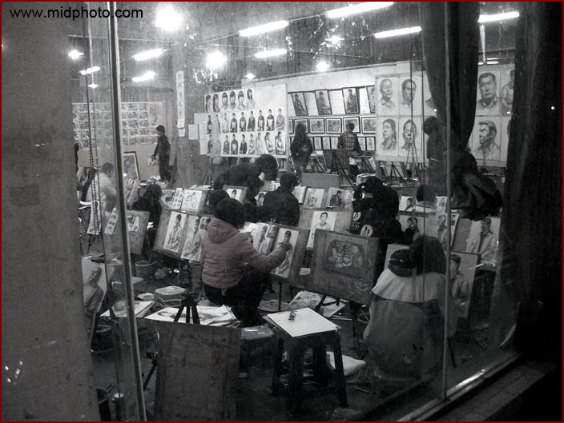
阳光一百小区附近有很多美术培训学校，高考突击用
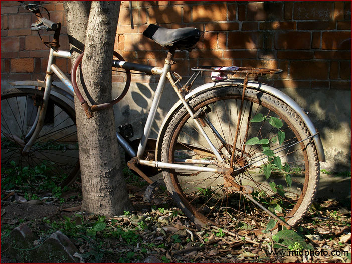
一辆旧自行车
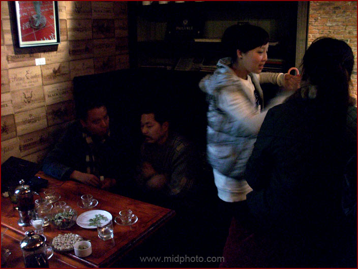
在酒吧里
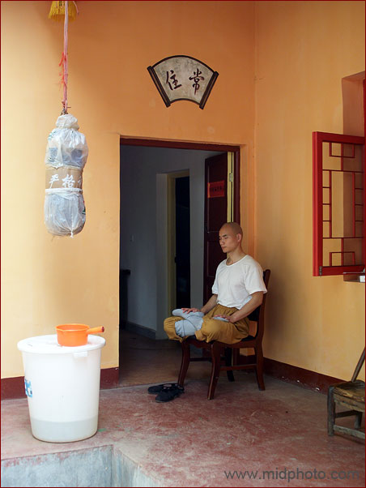
坪塘镇，村里的小庙
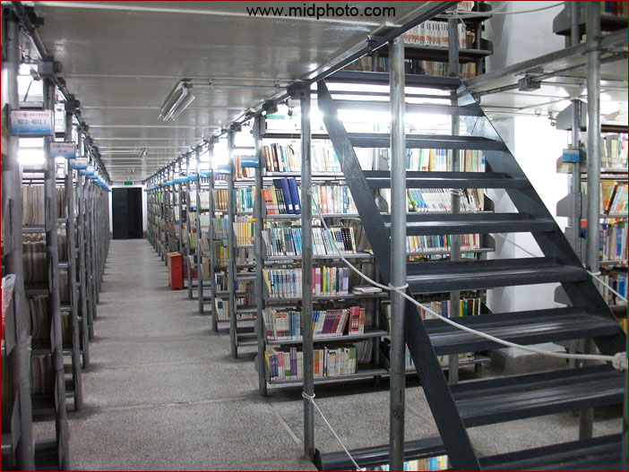
湖南大学北校区图书馆
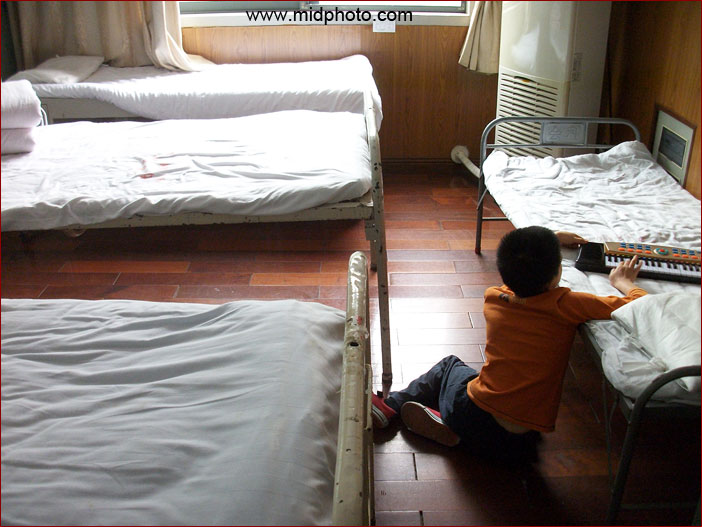
医院一角2
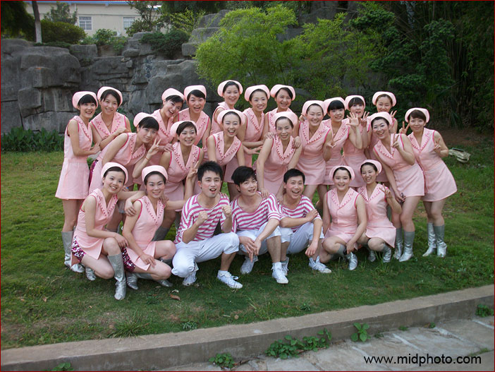
长沙市第四医院的护士们
（待续）
|